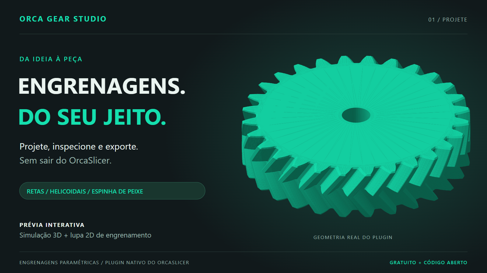
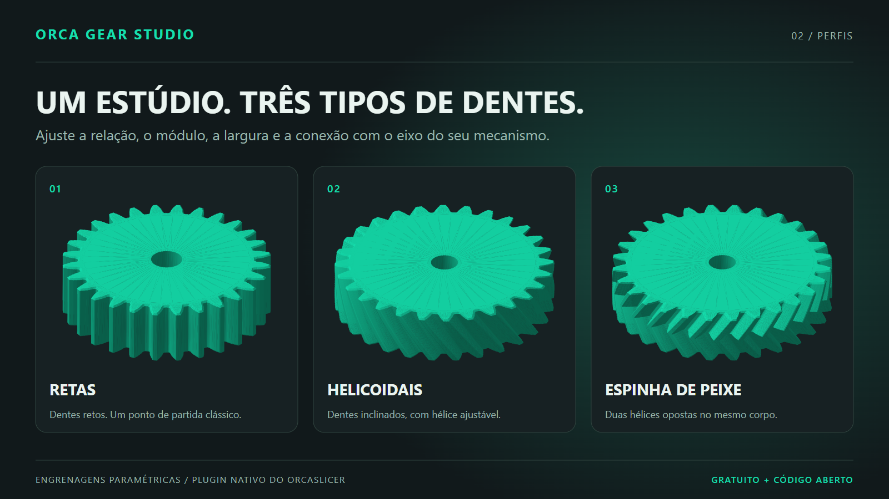
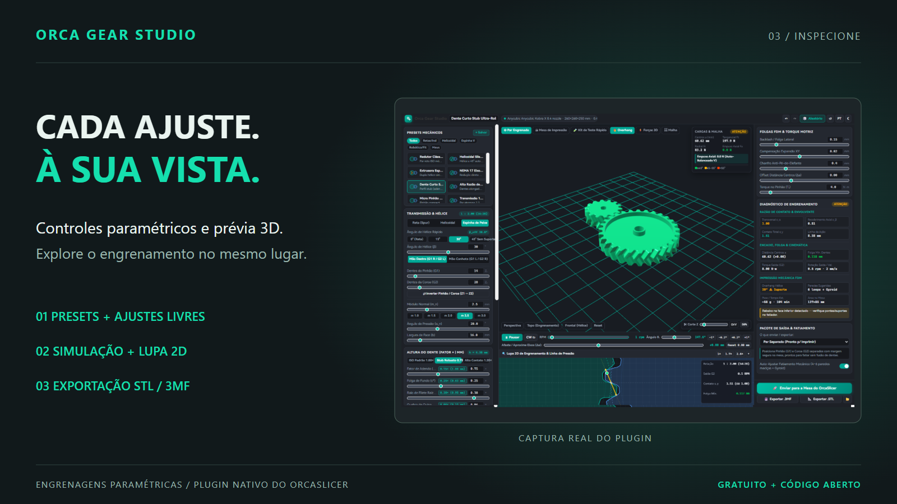
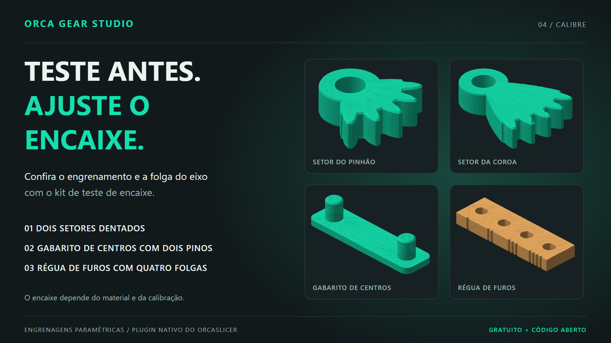
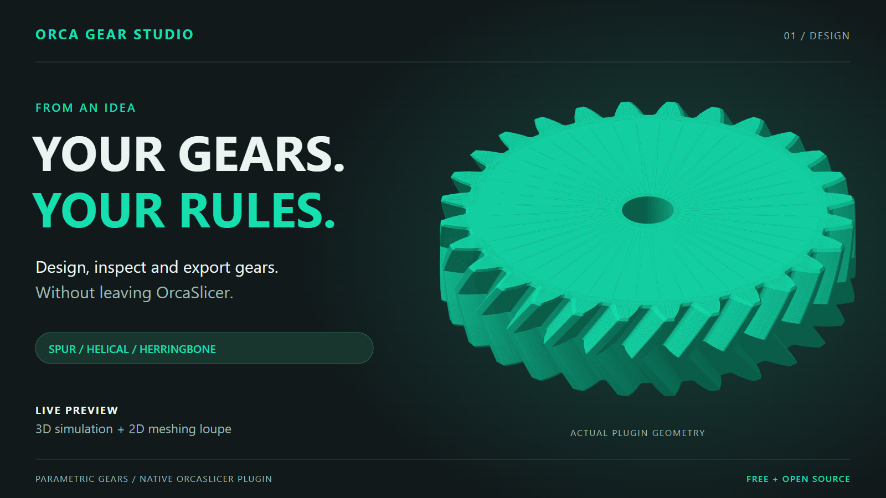
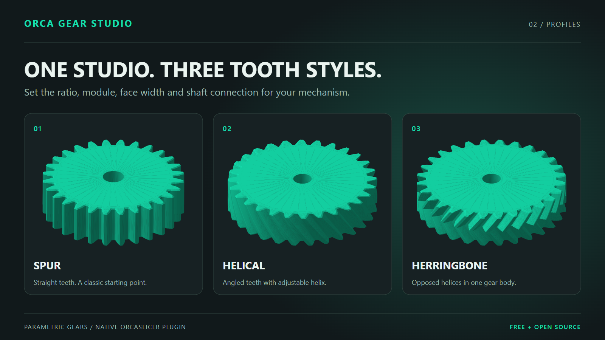
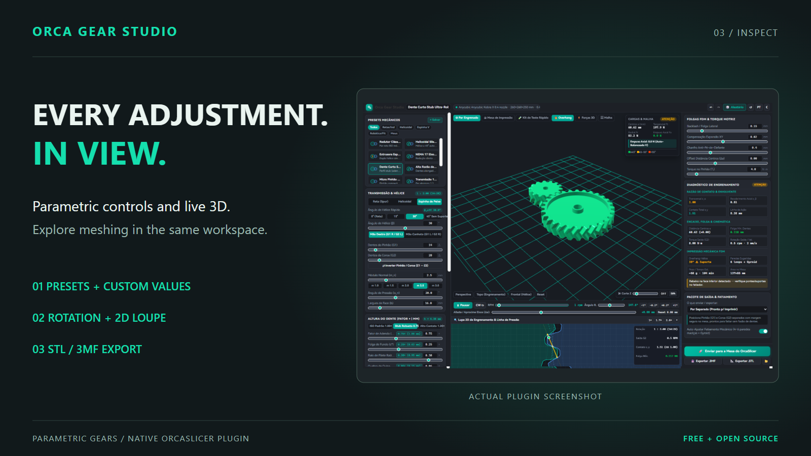
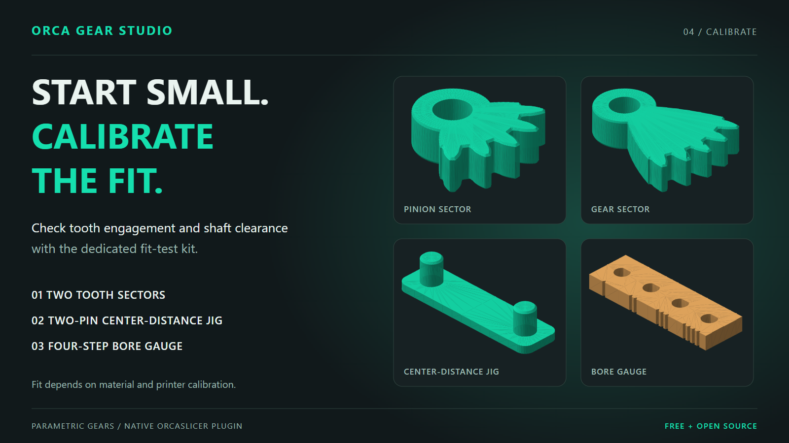

Suas engrenagens, do seu jeito. Sem sair do OrcaSlicer.
O Orca Gear Studio reúne projeto paramétrico, prévia 3D, simulação de giro e exportação de engrenagens em um só lugar. Funciona offline, com interface em português e inglês.

Três tipos de dentes
- Retas: dentes retos para explorar relações de transmissão e mecanismos simples.
- Helicoidais: ângulo de hélice ajustável e mãos opostas entre pinhão e coroa.
- Espinha de peixe: duas hélices opostas no mesmo corpo.
Ajuste dentes, módulo, ângulo de pressão, largura, altura dos dentes, correção de perfil e folgas. Comece com um preset ou salve sua própria configuração.

Veja o que está ajustando
Inspecione o par em 3D e acompanhe o contato na lupa 2D de engrenamento. Controle direção e velocidade de giro, avance o ângulo manualmente e explore a distância entre centros.
Os indicadores ajudam a observar folgas, razão de contato e possíveis interferências. Configure também furos circular, D, duplo D, sextavado ou chaveta, cubos, alojamentos e alívio do corpo.

Calibre antes de imprimir o par completo
O kit de teste de encaixe gera dois setores dentados, um gabarito de centros com dois pinos e uma régua de furos com quatro folgas progressivas. Experimente o ajuste com sua impressora e seu filamento antes de produzir as engrenagens completas.

Do projeto para a mesa
Exporte STL ou 3MF com objetos separados, ou use o envio nativo para a mesa no Windows e no macOS. Escolha o par, uma engrenagem, o kit de teste ou o conjunto disponível no plugin.
O encaixe depende da impressão e do material. Revise orientação, suportes e configurações antes de imprimir. Os diagnósticos e as sugestões de fatiamento auxiliam a avaliação do projeto.
Como começar
- Instale e ative no OrcaSlicer 2.5.1 ou superior. Feche e abra o aplicativo após instalar ou atualizar.
- Abra a aba Gerador de Engrenagens ou o painel lateral do Orca Gear Studio.
- Escolha um preset, ajuste a transmissão e confira a prévia.
- Faça um teste de encaixe quando necessário e exporte ou envie as peças à mesa.
Gratuito e de código aberto, sob licença MIT.
Your gears. Your rules. Without leaving OrcaSlicer.
Orca Gear Studio brings parametric design, a 3D preview, rotation simulation and gear export into one workspace. It runs offline, with English and Portuguese interfaces.

Three tooth styles
- Spur: straight teeth for exploring transmission ratios and simple mechanisms.
- Helical: adjustable helix angle and opposite hands for the pinion and gear.
- Herringbone: opposing helices in a single gear body.
Adjust tooth count, module, pressure angle, face width, tooth height, profile shift and clearances. Start with a preset or save your own configuration.

See what you are changing
Inspect the pair in 3D and follow contact in the 2D meshing loupe. Control rotation direction and speed, step through the angle manually and explore center distance.
Indicators help you inspect clearances, contact ratio and possible interference. Configure round, D-shaft, double-D, hex or keyway bores, hubs, counterbores and body lightening.

Calibrate before printing the full pair
The fit-test kit generates two tooth sectors, a two-pin center-distance jig and a bore gauge with four progressive clearances. Check the fit with your printer and filament before producing complete gears.

From design to the build plate
Export STL or multi-object 3MF, or use native delivery to the build plate on Windows and macOS. Select the pair, an individual gear, the fit-test kit or the available full set.
Fit depends on printing and material. Review orientation, supports and settings before printing. Diagnostics and suggested slicing settings support design inspection.
Get started
- Install and activate in OrcaSlicer 2.5.1 or later. Close and reopen the application after installation or an update.
- Open the Gear Generator tab or the Orca Gear Studio dock panel.
- Choose a preset, adjust the transmission and inspect the preview.
- Run a fit test when needed, then export or send the parts to the build plate.
Free and open source under the MIT license.